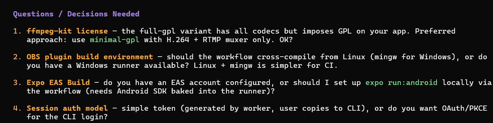
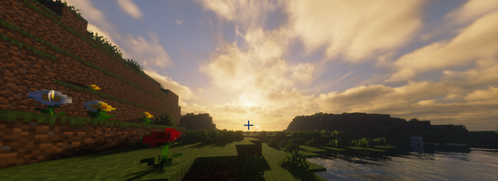

Personal dev site for messing with index.html, sharing thoughts / media, and linking projects for friends.
I use opencode for many of my projects. It helps but I usually fine-tune everything myself and make sure I understand what I'm building. I try to avoid low-effort AI-generated content.
Need a plugin or something else? Hit me up.
discord: synacni
discord profile (may take a moment to load)